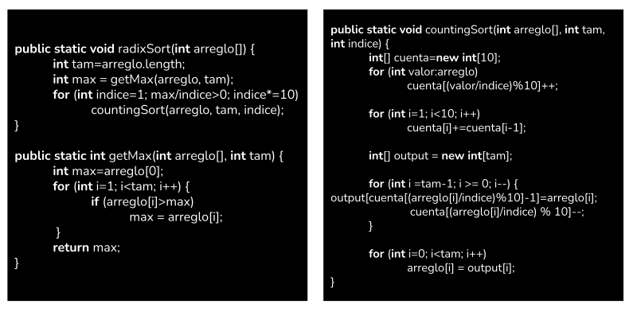
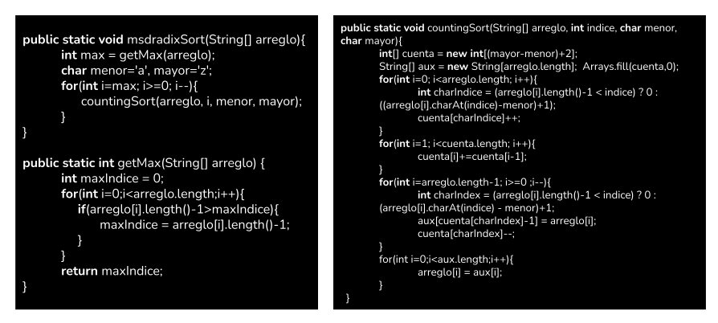
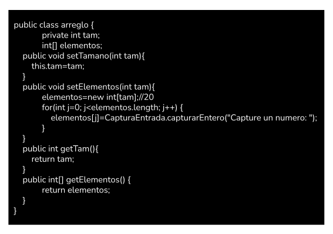
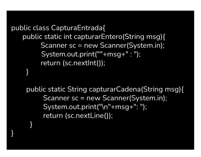
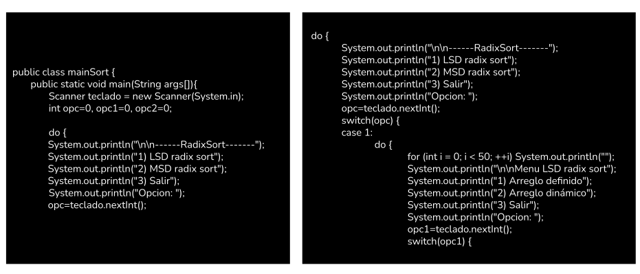
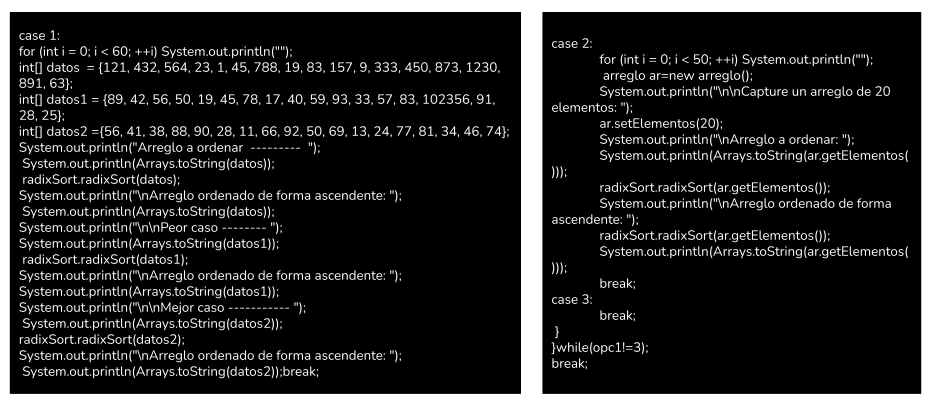
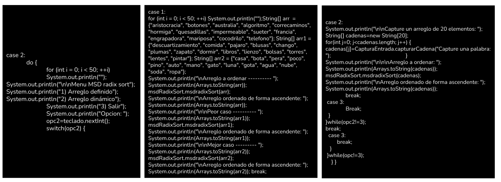

El programa corresponfiente al método radix sort fue desarrollodo en Java, por lo que esta sección explica el propósito
de cada una de las clases así como su función de forma general.
radixSort

- radixSort: Esta función se encarga de establecer las iteraciones y establecer el dígito con el que trabajará counting sort
- getMax: Esta función busca el mayor número en el arreglo.
- radixSort: Esta función realiza el algoritmo de counting sort, el cual funciona con una subrutina para radix sort.
msdRadixSort

- msdRadixSort: Esta función se encarga de establecer el número de iteraciones y comienza desde el inicio del arreglo.
- getMax: Esta función busca la palabra con más letras dentro del arreglo.
- radixSort: Esta función realiza el algoritmo de counting sort en palabras, al trabajar con sus longitudes y asignarles un lugar en cada uno de los índices de un arreglo.
Arreglo

Esta clase se encarga de crear un objeto arreglo para la captura de datos por el usuario, y después pasar este arreglo a los métodos de ordenamiento.
CapturaEntrada

Esta clase sirve para leer datos ingresados por el usuario de manera más clara.
menú

- En la primera imagen comienza la función main del programa. En esta sección se definen las variables y el menú principal.
- En la segunda sección del código, se define el menú para LSD radix sort, ya que se puede elegir capturar un arreglo o mostrar un arreglo ya capturado.

- En la tercera sección se ejecuta el primer caso, donde el usuario elige trabajar con un arreglo definido y aplicarle lsd radix sort.
- Después se presenta el segundo caso para lsd radix sort, donde se elige capturar un arreglo de 20 elementos.

- En la primera sección de código establece el menú para msd radix sort, el cual tiene las mismas opciones, arreglo definido o capturar un arreglo.
- En la segunda sección del código, se muestra el primer caso de msd radix sort que es un arreglo definido.
- En el último caso muestra la captura de un arreglo de cadenas para msd radix sort. Asimismo, es el fin de la clase main.